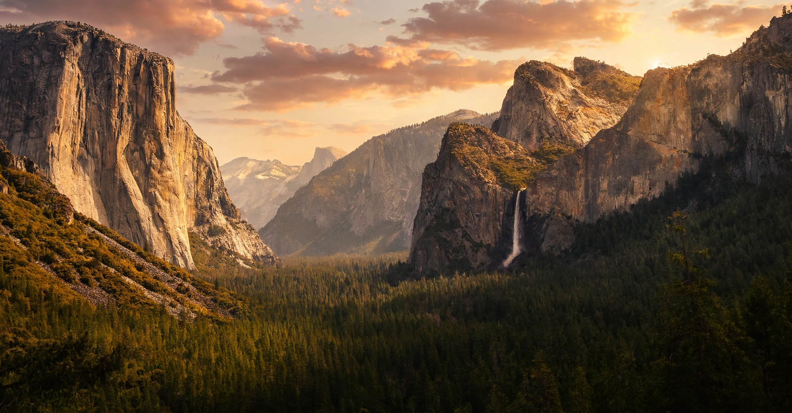

Yosemite National Park
From Wikipedia, the free encyclopedia

[Image: Yosemite Valley from Tunnel View — El Capitan, Bridalveil Fall and Half Dome]Yosemite Valley from Tunnel View — El Capitan, Bridalveil Fall and Half Dome
Yosemite National Park is a national park in the Sierra Nevada of California, celebrated for its granite cliffs, waterfalls, clear streams, giant sequoia groves and biological diversity. Designated a national park in 1890 after an earlier 1864 federal grant to California — spurred by Galen Clark, Abraham Lincoln's signature and, later, John Muir's advocacy — it is a UNESCO World Heritage Site and receives around four million visitors a year.
The valley
Yosemite Valley, carved by glaciers of the ice ages from a river canyon, is the park's heart: a flat floor seven miles long walled by El Capitan (a 900-metre monolith, the world's premier big-wall climb), Half Dome, Sentinel Rock and the falls — Yosemite Falls (739 m in three sections), Bridalveil and Vernal Falls — at their spring peak with snowmelt. The Ahwahneechee people lived in the valley for millennia before its violent "discovery" by the Mariposa Battalion in 1851; their descendants remain connected to it.
Ansel Adams's photographs made Yosemite the visual conscience of American conservation. Modern challenges include crowding, rockfall, drought-stressed forests and the fire regime of a warming Sierra — the same forces reshaping the Grand Canyon and Yellowstone in the great western system of parks.